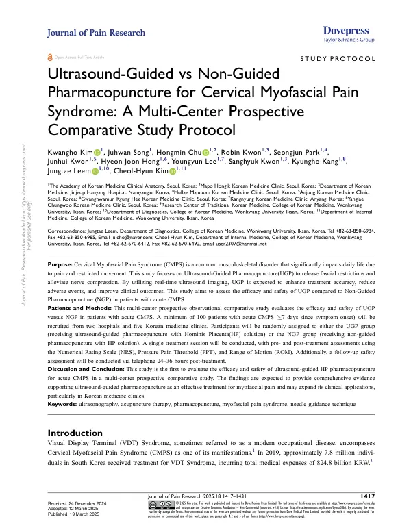

Ultrasound-Guided vs Non-Guided Pharmacopuncture for Cervical Myofascial Pain Syndrome: A Multi-Center Prospective Comparative Study Protocol
Kim K, Song J, Chu H, Kwon R, Park S, Kwon J, Hong HJ, Lee Y, Kwon S, Kang K, Leem J, Kim CH
Journal of Pain Research 18:1417-1431

첫 장 · 오픈액세스First page · open access
논문 소개Summary
경부 근막통증증후군은 통증과 운동 제한으로 일상에 크게 영향을 주는 흔한 근골격계 질환입니다. 화면을 오래 보는 일이 늘면서 더 흔해졌습니다. 약침은 이 질환에 쓰이지만, 눈으로 보지 않고 놓으면 목표한 근막층에 정확히 닿았는지 알 수 없습니다. 초음파로 실시간 영상을 보며 놓으면 정확도가 오르고 이상반응이 줄 것으로 기대되는데, 그것을 견주어 본 연구가 없었습니다.
이 논문은 그 비교 연구의 프로토콜입니다. 초음파 유도 약침과 비유도 약침의 효과와 안전성을 견주는 다기관 전향 관찰 비교연구로, 결과가 아니라 설계를 미리 공개한 글입니다.
증상이 생긴 지 7일 이내인 급성 경부 근막통증증후군 환자를 병원 두 곳과 한의원 다섯 곳에서 최소 100명 모집합니다. 참여자는 초음파 유도군과 비유도군에 배정되며 두 군 모두 자하거 약침을 씁니다. 시술은 한 차례만 하고, 시술 전후에 숫자평가척도와 압통 역치, 관절가동범위를 잽니다. 안전성은 시술 24~36시간 뒤 전화로 다시 확인합니다.
설계에서 눈여겨볼 것이 둘 있습니다. 첫째, 단회 시술로 잘랐습니다. 여러 번 놓고 견주면 어느 시점의 차이인지 흐려지는데, 한 번만 놓으면 영상 유도 자체의 몫이 드러납니다. 둘째, 압통 역치와 관절가동범위를 함께 넣었습니다. 환자가 말하는 통증만이 아니라 눌러서 재는 값과 움직이는 범위를 함께 보겠다는 뜻입니다.
급성 경부 근막통증증후군에서 자하거 약침의 초음파 유도 시술을 다기관 전향 비교로 평가하는 첫 연구입니다. 저자들은 이 결과가 근막통증에 대한 초음파 유도 약침의 근거가 되고, 특히 한의원에서의 임상 활용을 넓힐 수 있기를 기대한다고 적었습니다.
Cervical myofascial pain syndrome is a common musculoskeletal disorder whose pain and restricted movement bear heavily on daily life, and it has grown more common as screen work has. Pharmacopuncture is used for it, but administered blind there is no way to know whether the needle reached the intended fascial plane. Real-time ultrasound guidance is expected to improve accuracy and reduce adverse events — yet no study had compared the two.
This paper is the protocol for that comparison: a multicentre prospective observational comparative study of ultrasound-guided versus non-guided pharmacopuncture, published as a design rather than a result.
At least 100 patients with acute cervical myofascial pain syndrome, within seven days of symptom onset, are to be recruited from two hospitals and five Korean medicine clinics. Participants are assigned to the ultrasound-guided or the non-guided group, both receiving Hominis Placenta solution. A single treatment session is given, with the Numerical Rating Scale, pressure pain threshold and range of motion measured before and after, and a safety assessment by telephone 24 to 36 hours later.
Two features of the design are worth noting. First, it is cut down to a single session. Comparing across repeated treatments blurs which time point the difference belongs to; one session isolates what image guidance itself contributes. Second, pressure pain threshold and range of motion sit alongside the patient's reported pain — measured pressure and measured movement, not self-report alone.
This is the first multicentre prospective comparative evaluation of ultrasound-guided Hominis Placenta pharmacopuncture for acute cervical myofascial pain syndrome. The authors expect the findings to support ultrasound-guided pharmacopuncture as evidence for myofascial pain and to widen its clinical application, particularly in Korean medicine clinics.
인용Cite
Kim K, Song J, Chu H, Kwon R, Park S, Kwon J, Hong HJ, Lee Y, Kwon S, Kang K, Leem J, Kim CH. Ultrasound-Guided vs Non-Guided Pharmacopuncture for Cervical Myofascial Pain Syndrome: A Multi-Center Prospective Comparative Study Protocol. Journal of Pain Research. 2025;18:1417-1431. doi:10.2147/JPR.S509236